What do you do when you look out your door and see all these wonderful souls enjoying life in the pastures?
You stop. You take a deep breath. And you thank God for every single one of them.
Your support gives neglected and senior horses vet care, a full belly and a forever home.
Donate now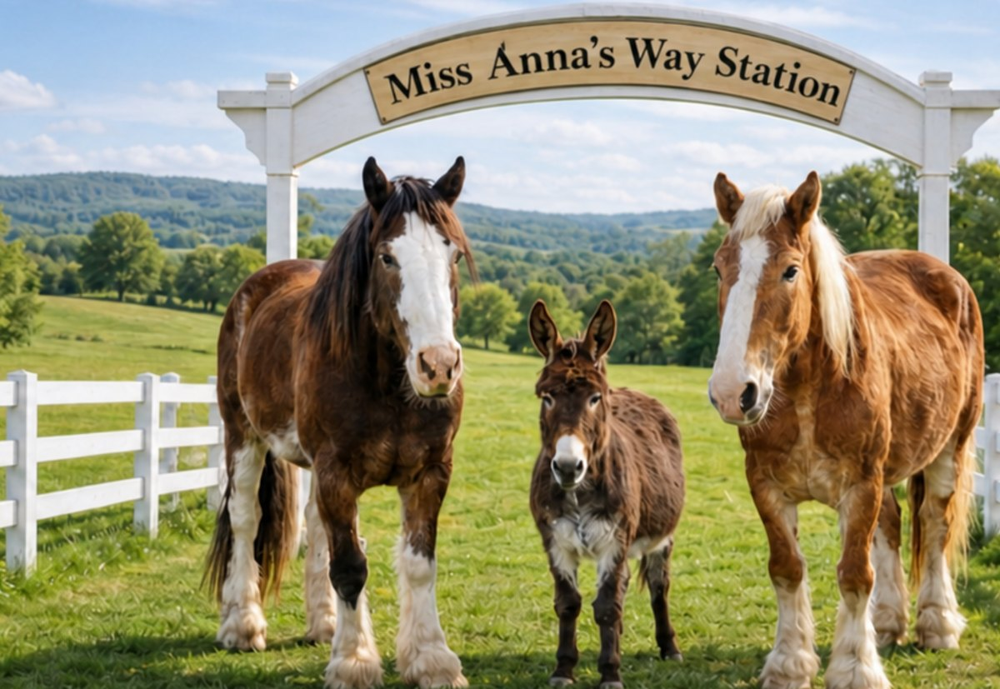
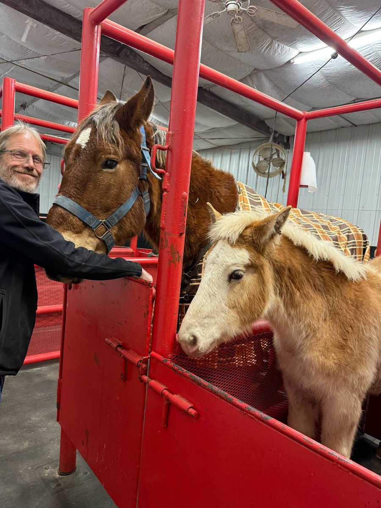
Miss Anna S Way Station is a 501(c)(3) nonprofit animal rescue in Little Rock, Arkansas.
We give neglected and senior horses a safe final home, with lifelong care, rehabilitation, and the dignity every animal deserves. Some came to us after months of being bought and sold through sale barns, and some came as tiny foals too sick to stand on their own. Today they graze, play, rest in the sunshine and make friends in our pastures.
Every new arrival spends their first weeks in quarantine with close veterinary care before joining the herd. From there, each horse is fed, doctored and loved for as long as they live. We may be a small rescue, but our hearts are huge, and the long days, sleepless nights and vet bills are worth it every time we look out the door and see peace.
The animals, and the people who look after them.
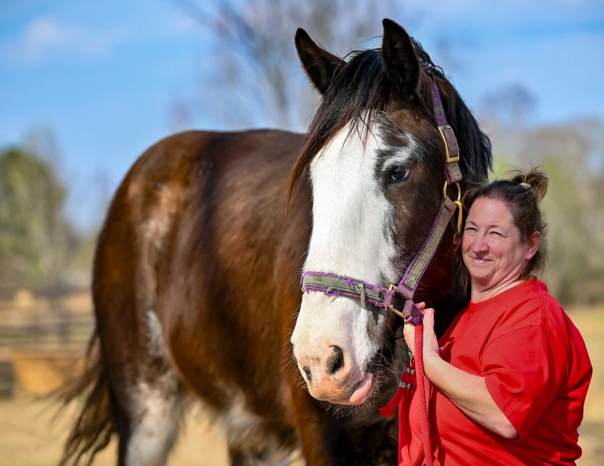
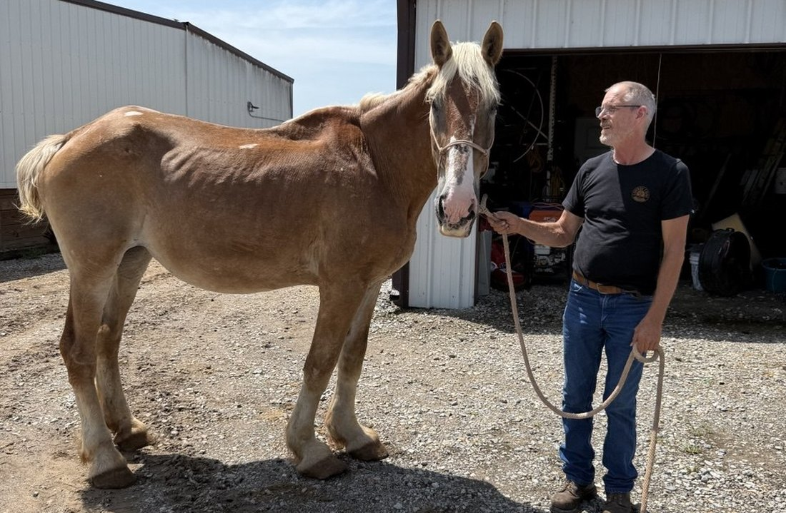

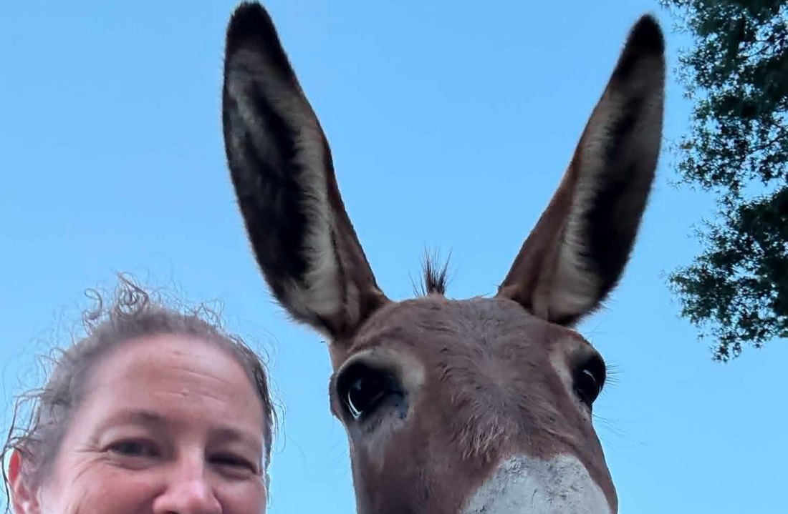
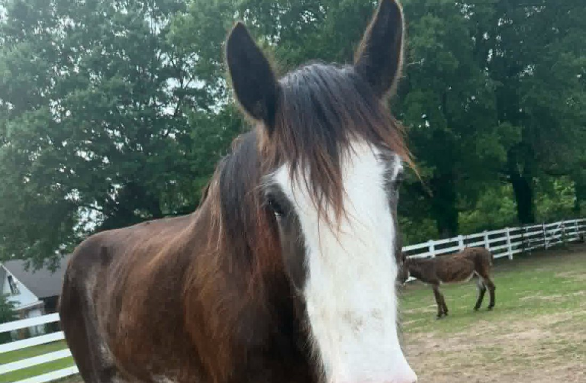
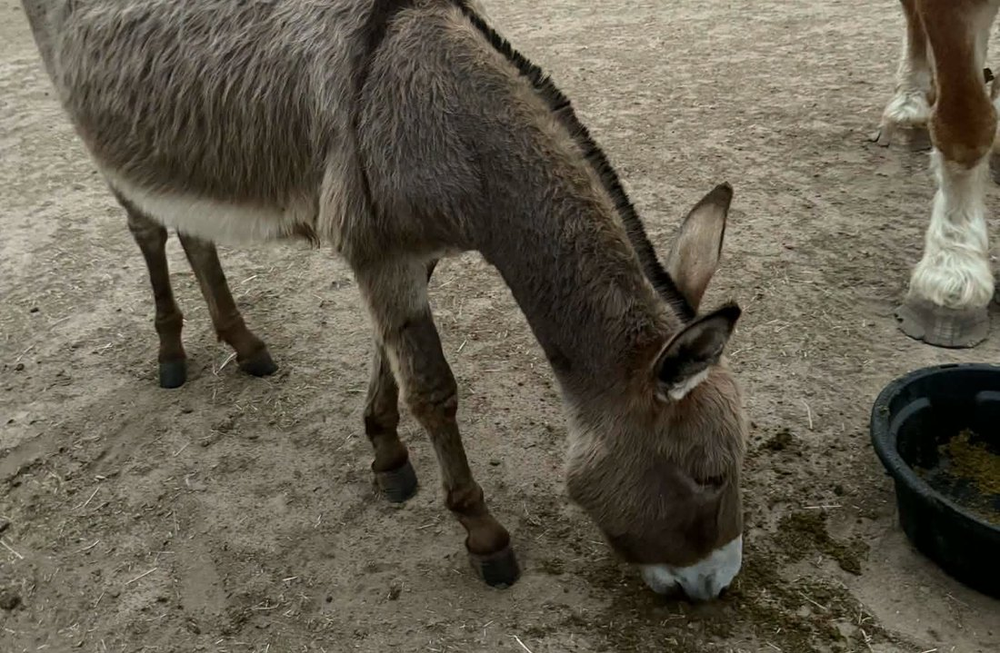
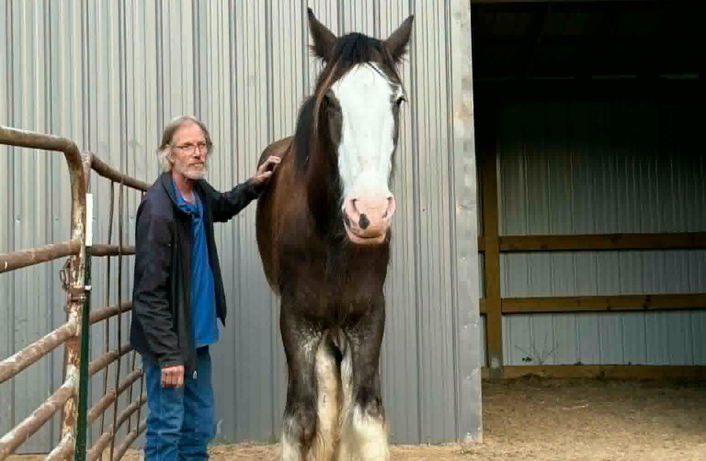
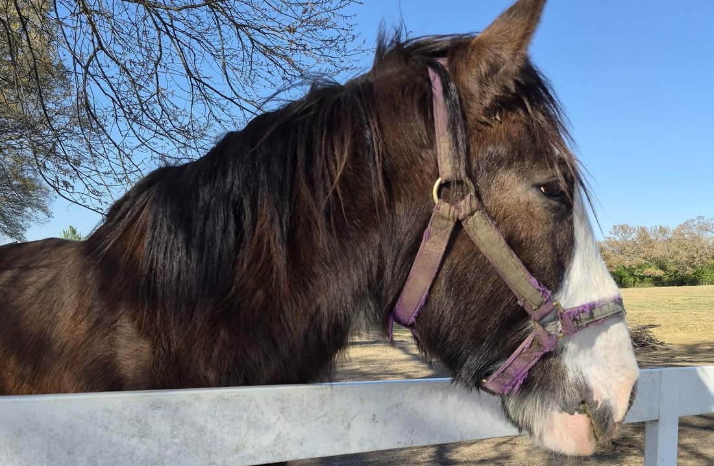
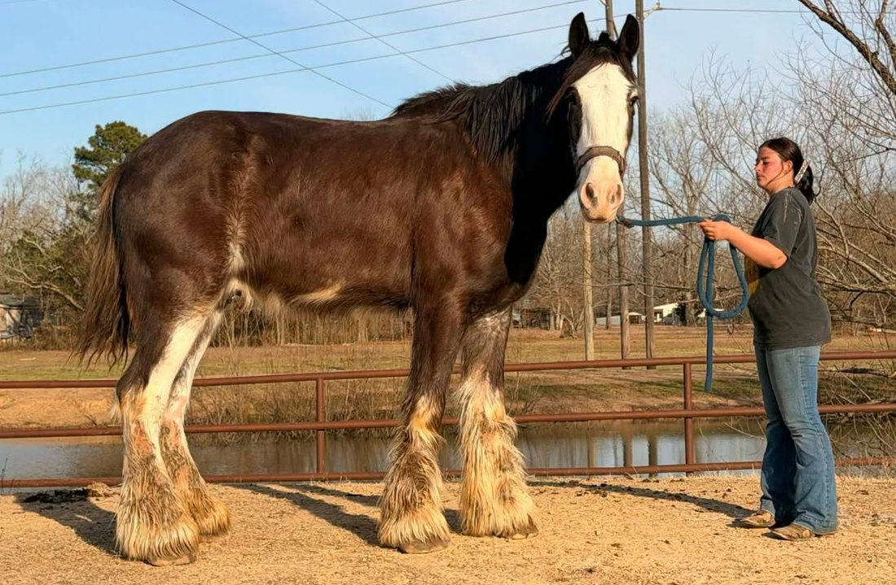
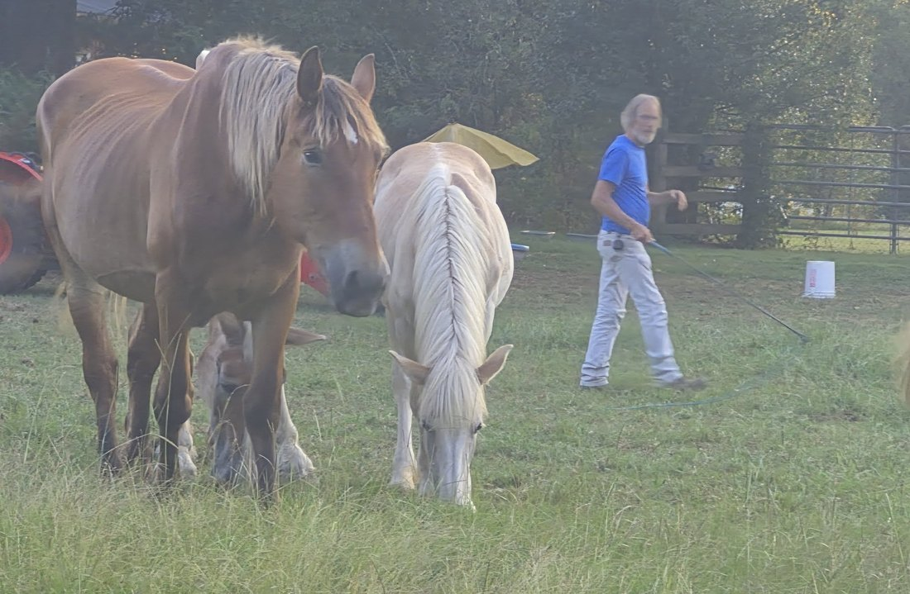
Money is the most useful thing you can send — it goes to feed, hay, vet care and whatever the week actually demands.
DonateOur Amazon and Chewy wish lists ship straight to the station, so the items arrive without anyone having to shop for them.
See the listsThe rescue's own reach comes from people passing posts on. One share from you is worth more than any advertising.
The latest from the barn.
You stop. You take a deep breath. And you thank God for every single one of them.